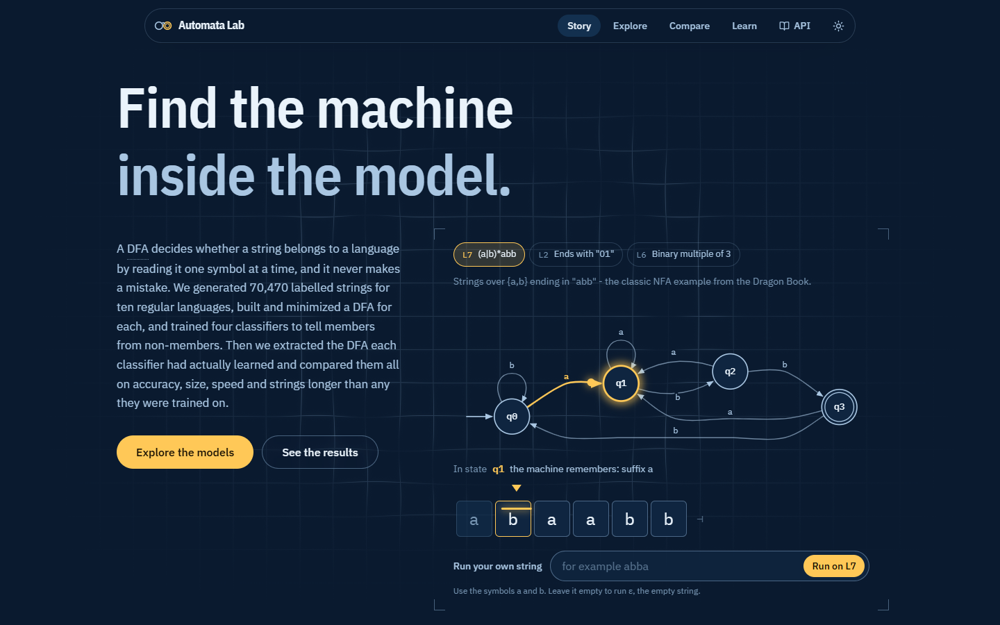
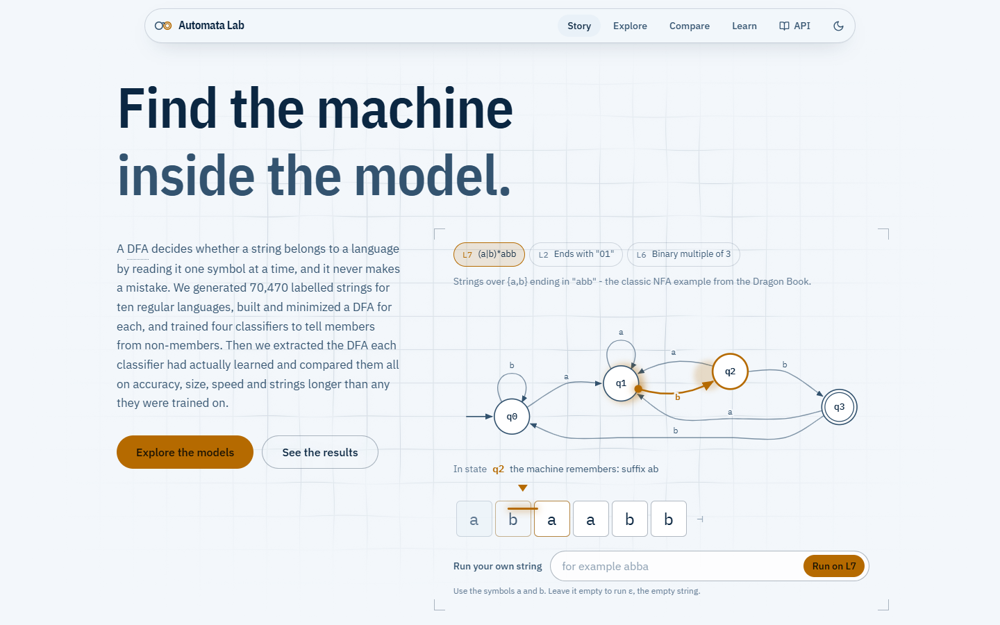
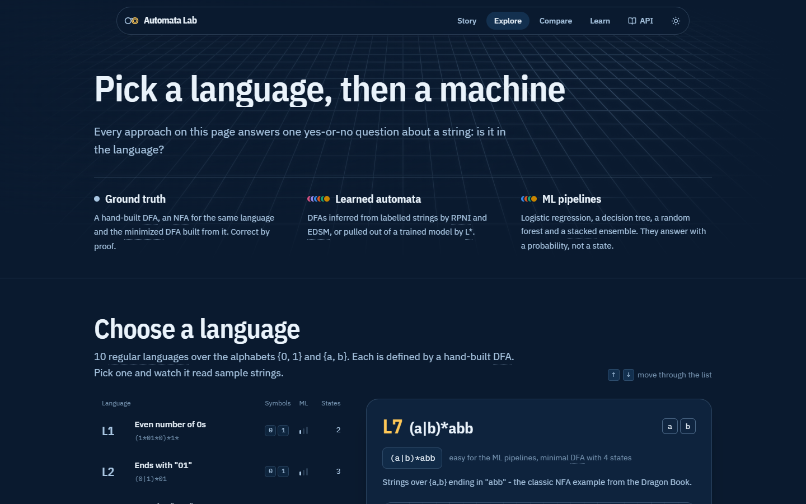
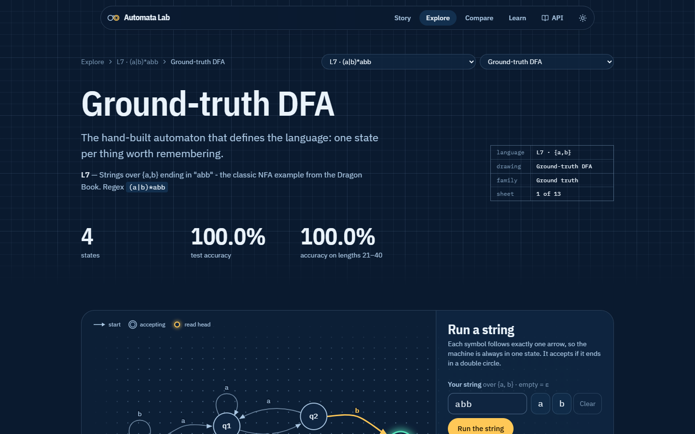
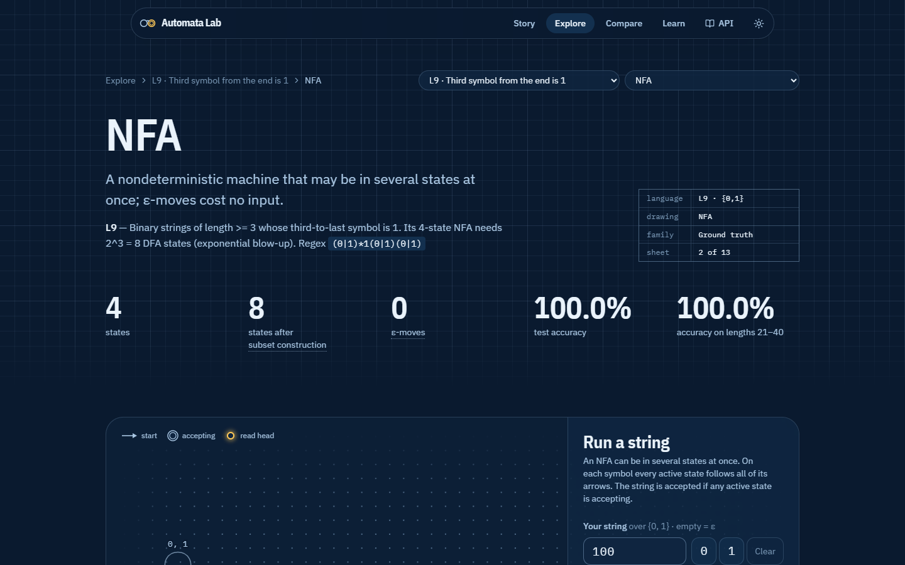
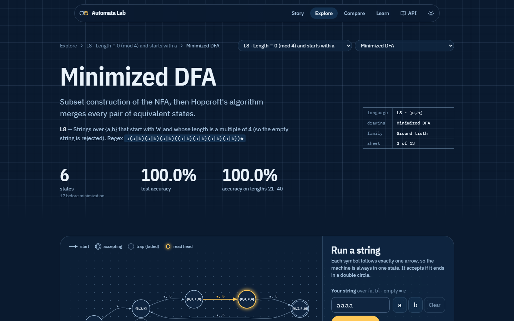
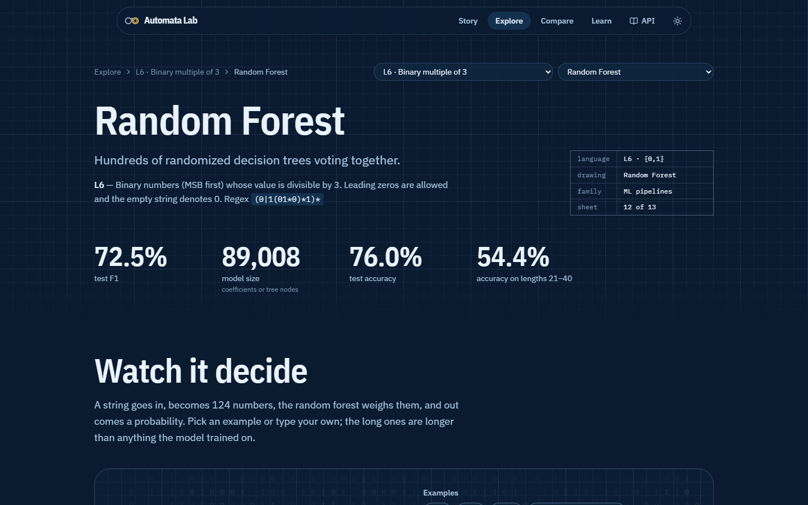
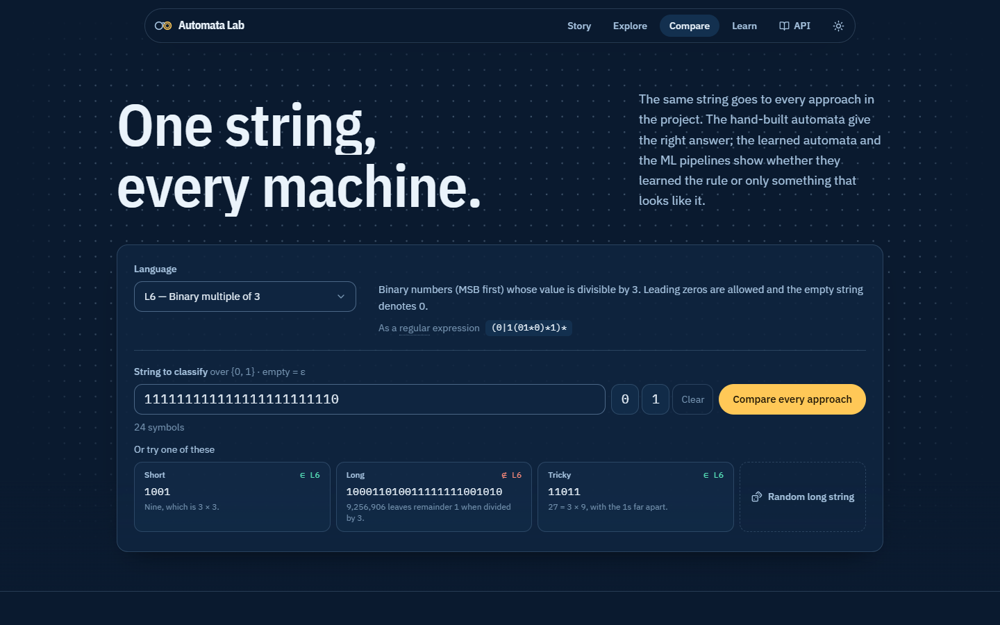
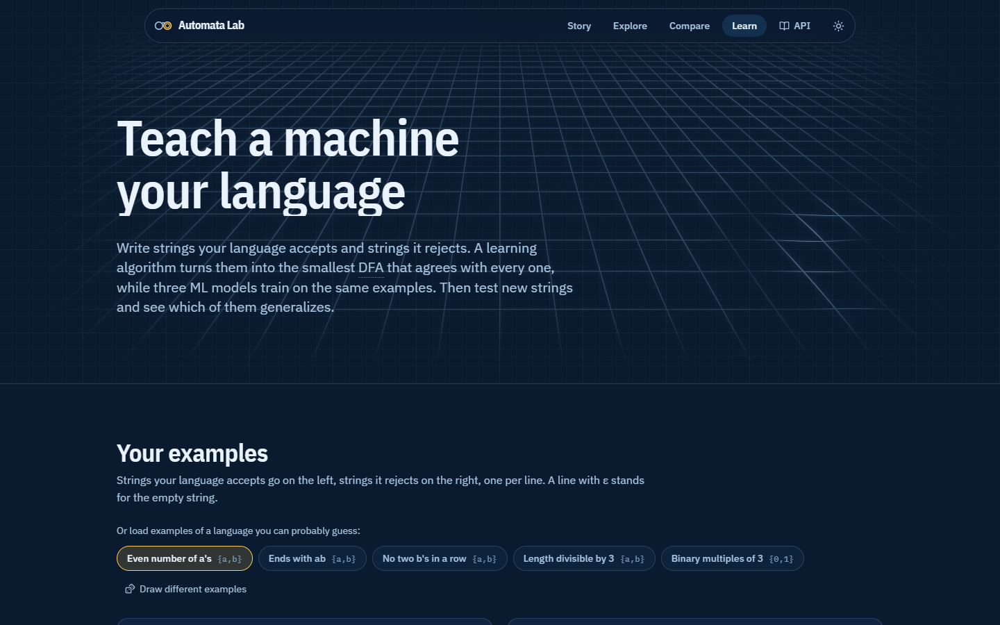

The project asks a simple question: can a machine-learning model learn what a finite automaton knows? Ten regular languages (L1–L10) were defined exactly by hand-built DFAs. From them we generated 70,470 labelled strings, trained four classifiers on generic string features, and then used Angluin's L* algorithm to extract the DFA each classifier had actually learned. The website lets you see all of it: the true machines, the learned machines and the classifiers, and lets you test any string against every one of them.
| Page | Address | What you do there |
|---|---|---|
| Story | / | Scroll through the project as chapters: the live machine, the question, the objectives, the theory, the dataset, the results, and how a DFA is extracted from a model. |
| Explore | /explore | Pick one of the ten languages, then one of 13 approaches with live accuracy and size figures. |
| Detail | /explore/L7/dfa | One approach for one language: its machine or model, how it was built or learned, and a "Try it" panel that runs your string step by step. |
| Compare | /compare | Run one string through all 13 approaches side by side; disagreements with the ground truth are explained. |
| Learn | /learn | Type your own accepted and rejected examples and watch a DFA being learned from them live. |
| API docs | :8000/docs | The documented REST API behind the site. |

The home page tells the project as a sequence of scroll chapters. A thin chapter tape under the navigation shows which chapter you are in; click a cell to jump there.
abb) reads sample strings on an input tape: the read head moves cell by cell, a token travels along each transition, and the verdict is stamped. Type your own string under the tape to run it immediately, or switch the language with the chips above the drawing.Explore is the index of everything in the project. First choose a language: each entry shows its alphabet, its regular expression and the size of its minimal DFA, and the chosen language's machine is drawn beside the list. Then choose one of 13 approaches, grouped in three families:
| Family | Approaches | What they are |
|---|---|---|
| Ground truth | DFA, NFA, minimized DFA | Exact constructions, correct by proof: the hand-built DFA, an NFA (natural or Thompson's ε-NFA of the regex) and the DFA obtained by subset construction plus Hopcroft minimization. |
| Learned automata | L* from LR, DT, RF and the stack; RPNI; EDSM | DFAs extracted from a trained model with L*, or learned directly from the labelled training strings by state merging. |
| ML pipelines | Logistic Regression, Decision Tree, Random Forest, Stacked ensemble | Classifiers trained on 124 generic string features (counts, n-grams, positions, runs, residues). |

Every approach for every language has its own page. The header names the language and the approach, shows its key figures (states, test accuracy, accuracy on strings of length 21–40, fidelity for extracted DFAs) and says whether a learned DFA matches the ground truth. Two menus switch the language or the approach without leaving the page.

An NFA can be in several states at once, so a run lights a set of states after each symbol. A step-by-step player replays the subset construction that turns the NFA into a DFA; for L9 a 4-state NFA becomes an 8-state DFA, the classic exponential blow-up.


A pipeline page shows the path from string to decision: the string becomes 124 numbers, the model turns them into a probability, and 50% is the threshold. It explains what the model looks at (coefficients, the decision tree, feature importances or the stack's weights), its metrics on validation, test and the long set, and the DFA that L* extracted from it. Try it shows the probability on a gauge with the model's reasons for that string.

Pick a language and a string; all 13 approaches answer side by side, grouped by family, with the ground truth first. Approaches that disagree with the ground truth are highlighted with the reason (for example, a string longer than anything the models were trained on). The address bar keeps the language and string (/compare?lang=L6&s=110), so a comparison can be shared as a link.

Write strings the machine should accept and strings it should reject (or start from a preset), choose a learner (RPNI, EDSM, or an ML model followed by L*), and the site learns and minimizes a DFA from your examples. Then test new strings: the learned DFA runs them step by step and the ML models trained on the same examples give their verdicts beside it. Conflicting or one-sided examples get a clear message instead of an error.

| Pipeline | Test accuracy | Test precision | Test recall | Test F1 | Accuracy on lengths 21–40 |
|---|---|---|---|---|---|
| Logistic Regression | 0.921 | 0.908 | 0.904 | 0.905 | 0.906 |
| Decision Tree | 0.972 | 0.967 | 0.968 | 0.968 | 0.911 |
| Random Forest | 0.976 | 0.972 | 0.973 | 0.973 | 0.934 |
| Stacked ensemble | 0.975 | 0.972 | 0.969 | 0.970 | 0.915 |
Means over the ten languages. Dataset: 70,470 strings (train 35,329, validation 7,570, test 7,571, and a separate long set of 20,000 strings of length 21–40 never used for training).
D:\CondaEnvs\ai\python.exe run_all.py starts the API (http://127.0.0.1:8000, documentation at /docs) and the website (http://127.0.0.1:5173). --prod serves both from one server; --check runs the tests, the build and an end-to-end browser test.frontend; frontend/vercel.json forwards /api and /docs to the API) and the Python API on Render with the render.yaml blueprint. scikit-learn and SciPy are too large for Vercel's Python functions, and the Learn page keeps sessions in the API's memory.